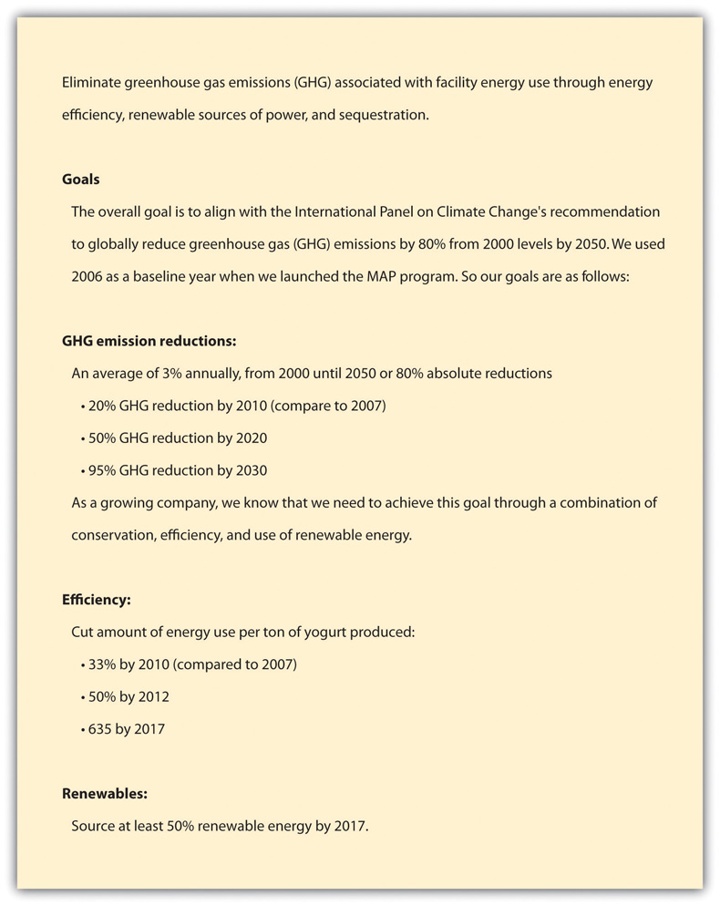
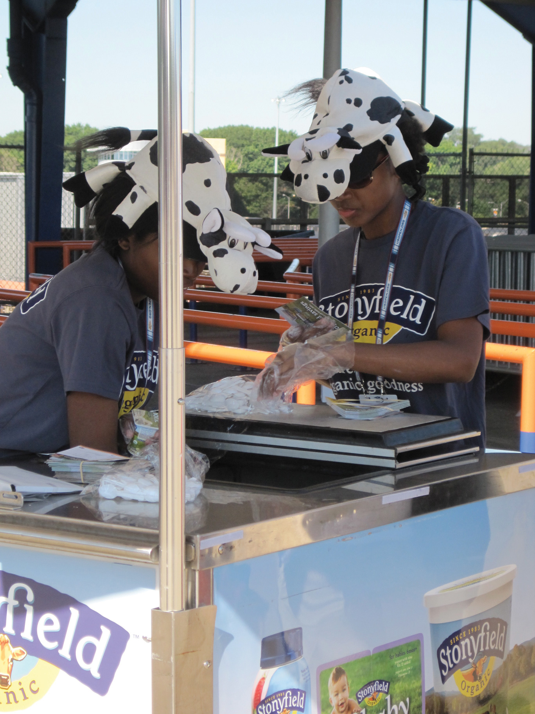

As social entrepreneurs, Gary and Samuel deeply cared about the environment and family farms long before they founded Stonyfield. Gary knew from the start that he needed more than a vague aspiration that Stonyfield could make money and save the world. He developed a missionA short statement of the purpose of a company or organization. It guides the actions of the organization, spells out its overall goal, provides a sense of direction, and guides decision making. It provides “the framework or context within which the company’s strategies are crafted and executed.” statement to help guide the company. This mission has evolved over the years for Stonyfield but has been consistently focused on sustainability and has remained a foundation that guides company strategy and all decisions and practices.
On mission statements, Gary stated, “Every world-saving (and money-making) business needs a stated mission—a rallying cry that focuses efforts, helps set priorities, and gives all hands a meaning and a purpose. So one night I sat down with a bottle of cabernet and wrote a mission statement that has barely changed since.”Gary Hirshberg, Stirring It Up: How to Make Money and Save the World (New York: Hyperion, 2008), 23.
Table 13.1 Stonyfield’s Mission Statement
| Gary’s Draft Mission (1983)Gary Hirshberg, Stirring It Up: How to Make Money and Save the World (New York: Hyperion, 2008), 23–24. | Stonyfield’s Current Mission Statement (2011)“Our Mission,” Stonyfield Farm, Inc., accessed August 2, 2011, http://www.stonyfield.com/about-us/our-mission. |
|---|---|
|
To provide the very highest-quality, best tasting, all natural, and certified organic products. To educate consumers and producers about the value of protecting the environment and supporting family farmers and sustainable farming methods. To serve as a model that environmentally and socially responsible businesses can also be profitable. To provide a healthful, productive, and enjoyable workplace for all employees, with opportunities to gain new skills and advance personal career goals. To recognize our obligation to stockholders and lenders by providing an excellent return on their investments. |
Yogurt on a mission We’re no greenhorns when it comes to green business. We were on a mission to make the planet healthier even before we were making yogurt. Today, we make it our mission to work towards all sorts of healthy. Our mission: We’re committed to healthy food, healthy people, a healthy planet and healthy business. Healthy food. We will craft and offer the most delicious and nourishing organic yogurts and dairy products. Healthy people. We will enhance the health and well-being of our consumers and colleagues. Healthy planet. We will help protect and restore the planet and promote the viability of family farms. Healthy business. We will prove that healthy profits and a healthy planet are not in conflict and that, in fact, dedication to health and sustainability enhances shareholder value. We believe that business must lead the way to a more sustainable future. |
In the beginning, as the company struggled to sustain itself financially, Stonyfield fulfilled its mission primarily directly through its product. Organic yogurt was a product that was produced without pesticides and other harmful chemicals and was therefore better for the environment and healthier for consumers. While Stonyfield had a much broader vision of its social purpose, it simply did not have the financial resources to devote to any other actions to express its social values other than through its product.
From the beginning, the company had to balance business realities with sustainability aspirations. Stonyfield started as all organic but soon had to switch to “natural” milk due to lack of sufficient organic milk supply as its production needs grew. By the mid-1990s, the company was back up to 85 percent organic, with some fluctuations afterward depending on the supply of organic milk. By 2007, the company had returned to its former 100 percent organic (for a significantly larger production base) and has remained there ever since. A more in-depth discussion of natural and organic takes place later on in the case.
Also very early on, Stonyfield learned that they had to match up the business realities of producing a good that consumers wanted to buy while still holding true to their values. For example, at one point, a garden salad–flavored yogurt was introduced, and while the company had high hopes for the flavor and it being a healthful option, it was not popular with consumers and had to be discontinued.
The next generation of sustainability (beyond the organic yogurt product) effort did not occur at Stonyfield until 1990 with the launch of the company’s Adopt-a-Cow program (later renamed Have-a-Cow). The program was formed to educate consumers on the link between food and the environment and the value of supporting family farmers and sustainable farming methods. It had taken seven years, but the company was finally arriving at a place where it could start fulfilling its original broader social mission and the key was having had some financial success.“Meet the Cows,” Stonyfield Farm, Inc., http://www.stonyfield.com/healthy-planet/organic-farming/have-cow/meet-cows. Stonyfield achieved profitability in 1991 and that allowed for new sustainability initiatives for the company.
In 1991, the company opened a farm visitors’ center to help further promote awareness of the family farm and also produced the first Stonyfield Yogurt Cookbook. The cookbook combined marketing with education on the nutritional benefits of organic yogurt.
In 1993, with sales of $12.5 million and strong profitability, Stonyfield was in a position to actively engage in significant environmental initiatives. This included a comprehensive recycling program, an energy retrofit of their facility, and work with the nonprofit Oxfam America to promote sustainable agriculture worldwide. Also in 1993, the company launched a Profits for the Planet program that contributed 10 percent of profits to efforts that helped protect and restore the earth.
As Stonyfield expanded its sustainability programs, it also held true to its values for its products. For example, one new product, the “Frookwich”—vanilla frozen yogurt sandwiched between two whole-wheat, fruit juice–sweetened cookies—was popular with consumers but had quality problems. The cookies become soggy relatively quickly. Stonyfield discontinued the product rather than compromise their values by adding an artificial ingredient that would have prevented the product degradation.
Stonyfield also was the first dairy processor to secure agreements with its milk suppliers to ensure that milk did not come from cows treated with the controversial synthetic bovine growth hormone rBST (or rBGH) after the FDA approved its use. In 2005, Stonyfield became a certified organic producer and all of its products were certified and labeled under the USDA organic seal.
Other examples of product stewardship tied to Stonyfield’s mission included the switch from plastic pint containers to more environmentally friendly unbleached paper pint containers for the company’s frozen yogurt and ice cream.
Stonyfield also assumed a leadership position in addressing climate change. In 1997, Stonyfield became the first US manufacturer to offset 100 percent of the CO2 from its facilities’ energy use. Stonyfield also partnered with the Union of Concerned Scientists in 1997 to raise awareness of global climate change and developed a guide called Reversing Global Warming: Offsetting Carbon Dioxide Emissions to help other businesses take steps to reduce their carbon footprint.
In 2001, Stonyfield entered, in a significant way, the political arena to give the company a voice in setting national policy on environmental issues. This involved using a public relations and Internet campaign to educate consumers about the negative effects of the White House’s proposed energy bill. Stonyfield used this opportunity to teach consumers and the general public about energy efficiency and other positive steps they could take to reduce their environmental impact.
In 2002, Stonyfield, after the release of the US Department of Agriculture National Organic Standards, published a guide to help consumers understand organic products and the positive impact that supporting organic agriculture could have on the environment. To improve the eating habits of children, the company sponsored organic and all-natural snack vending machines in schools from California to Connecticut.
Also in 2002, the company provided free smoothies to commuters stepping off Boston subways to thank them for choosing public transportation. This was part of Stonyfield’s marketing efforts tied to the company’s social mission.
Another “subway marketing” example was in Chicago. In order to keep a new account for a large Chicago supermarket chain, Stonyfield needed to increase its market share from 0.08 percent to 3 percent in three months. Gary Hirshberg himself crafted Stonyfield’s “hand-to-mouth” marketing strategy and distributed free cups of yogurt to Chicago Metro transit riders. Eighty-five thousand containers of yogurt were handed out with a coupon that read, “We salute your commuter ridership and thanks for doing your part to help save the planet.” The coupons reminded transit riders that traveling by train instead of car kept forty-five pounds of particulates per year from spewing into the atmosphere. The strategy worked. Stonyfield received media coverage in every local newspaper and NBC’s Today show Chicago affiliate. Market share jumped to 2.5 percent, enough to keep the account and build a stable market position in Chicago. An added bonus was the hand-to-mouth offensive only cost $100,000, or just 1 percent of the $10,000,000 an advertising agency wanted to charge in order to try to achieve the same share.Gary Hirshberg, Stirring It Up: How to Make Money and Save the World (New York: Hyperion, 2008).
In 2006, Stonyfield formally put into place its Mission Action Plan (MAP) program under the direction of Gary’s sister and vice president of natural resources, Nancy Hirshberg. MAP set detailed plans and goals for the company’s environmental strategies and programs. It was designed as a company-wide initiative to engage all employees in achieving Stonyfield’s environmental mission and the company’s philosophies and culture. The management saw MAP as part of a transformative change for the company and employees on both a professional and personal level.
Under Nancy’s leadership, high-level teams in each of Stonyfield’s high areas of environmental burden were formed. These areas included sustainable packaging, zero waste, facility GHG emissions, and transportation. Each environmental team was required to complete an annual action plan that set long-term and near-term goals and outlined the steps to achieve the goals. The plans needed to be approved by Gary, Nancy, and Stonyfield’s chief operating officer (COO).
A portion of management compensation was directly tied to meeting plan objectives. MAP turned what was once an ad hoc and sporadic process into a company-wide management system lead by senior leaders across the organization.
MAP required a team charter and specifics on required behavioral and other changes. For example, training was provided, which included measuring the number of computer users using energy savings software settings.
Figure 13.4 Stonyfield Brand Campaign
Source: “Stonyfield Farm,” Stonyfield Farm, Inc., http://www.stonyfield.com/?utm_source=google&utm_medium=cpc&utm_term=stonyfield&utm_campaign=brand_stonyfield_products&buf=99999999.
Stonyfield managers were responsible for developing “green leaders”—their employees. Employees received training on environmental issues and ethics.
Teams used specific criteria and assessment tools to measure outcome performance. Outcome measures had to be SMART—specific, measurable, attainable, realistic, and tangible (see Chapter 4 "Accountability for Sustainability" for a more in-depth discussion of sustainability performance indicators). MAP included a resource assessment and a plan homepage aimed at identifying and correcting any gaps between current human resource skills and what was needed to accomplish the plan (training and team building). MAP required teams to identify obstacles and issues to plan achievement and recommendations to address them.
MAP was a management system and process that helped managers and employees rally around Stonyfield’s sustainability-focused mission. Stonyfield’s overarching mission was driven by five “sub-missions” that paved the way for making sustainability an everyday reality for the company.
The five sub-missions built on one another in a continuous flow of interactions throughout the organization. Stonyfield’s sub-missions constituted essential elements of Stonyfield’s mission, organizational culture, values, and way of doing business. The following were the five sub-missions:
The Company will sell only superior products, the prerequisites for becoming a market contender and a rallying point for employees to maintain top quality.
By 2010, Stonyfield was the number one selling US yogurt brand and number three worldwide. Stonyfield used a differentiation strategy that separated it from much larger rivals and was highly valued by its customers. It sold only superior, high quality, 100 percent certified organic yogurts and dairy products. No artificial ingredients, colors, flavors, sweeteners, or preservatives were used in its products. All ingredients were sourced from suppliers who did not use toxic, persistent pesticides, chemical fertilizers, synthetic hormones, antibiotics, or genetically modified organisms (GMO).
Stonyfield’s sourcing strategies differentiated the company from competitors. It paid farmers a premium for not treating their soils with chemicals that killed microbial soil life on nonorganic farms and helped to keep more than 180,000 agricultural acres free of toxic pesticides and chemicals known to contaminate food, soil, water, and air.Siel Ju, “Interview with Stonyfield CEO Gary Hirshberg: ‘Everybody Can Win,’” Mother Nature Network (blog), June 16, 2010, accessed August 2, 2011, http://www.mnn.com/lifestyle/responsible-living/blogs/interview-with-stonyfield-ceo-gary-hirshberg-everybody-can-win.
The Company will use its products and services to educate people about a cause they care about.
Gary felt that a lot of people didn’t trust companies, but by Stonyfield having a worthy mission statement and following it, the company could be different and could be trusted. Trust needed to be earned and built on making good on Stonyfield’s mission. This required not only delivering on its pledge of selling superior products but also educating people about a cause they cared about and what Stonyfield was doing to help them address the cause. One of the main ways Stonyfield got its educational message out was on its yogurt lids and product packaging. Stonyfield printed its messages on millions of yogurt lids each month. The lids told customers about nonprofit environmental efforts, farming and health issues, and other causes. Stonyfield put its messages on more than three hundred million lids annually.
In addition to lids, Stonyfield delivered its messages through its web page; visitors center; community-sponsored events; product and naming contests; publications; management and employee presentations; and participation in governmental, environmental, educational, and business conferences and events.
Family Farms
A founding premise of Stonyfield Farm holds that the small family farm in comparison to the large, concentrated animal farming operation (CAFO) is generally a better farming system…Large numbers of animals in a confined area concentrate the animal waste products posing an environmental and health risk. On smaller farms, animals generally receive more personal attention and live longer lives under less stress…Family farmers live on the land that they steward. Thus, we believe, they are generally inclined to care about what goes into the soil, water and air where they live and raise their children. Family farms provide open spaces, which preserve rural character and provide fields and forests for wildlife. They also provide jobs and support rural economic vitality, as well as opportunities for business ownership and independence.
Source: “Stonyfield Mission Statement,” Stonyfield Farm, Inc., http://www.stonyfield.com.
For Stonyfield, while it supports a wide range of social causes, a driving principle is the importance of family farms. The Have-a-Cow program discussed previously is a tangible example of the company using its resources to help educate the public on family farms and the vital role they play in linking food to person.
The Company will prove that a cause-driven enterprise can also succeed as a business.
From many perspectives, Stonyfield’s approach to business was different. The company paid a minimum of 50 percent above the going rate for conventionally grown raw materials, and in some instances, it paid up to two and half times the price. Because of the higher price for ingredients and supplies, its gross margin was lower than its industry rivals’ gross margin. Gary Hirshberg compared Stonyfield’s business model and gross margins to Danone’s: “They [Danone] don’t really understand our business model. They don’t really know anything about organics. They know about yogurt, but we have a much more expensive product than them. And while we charge more than them, I can tell you my gross margin is much, much poorer than theirs. Organic milk costs 70 percent more than conventional milk. I can’t charge 70 percent more for a cup of yogurt. Organic sugar can be at times 100 times more than conventional.…But yet my net margins are actually the same as or better than theirs.”“Stonyfield Farm & Groupe DANONE Announce Partnership Organics, Health and Nutrition Brings Yogurt Makers Together for Unique Combination of Cultures,” Dannon, last modified October 4, 2001, accessed August 2, 2011, http://www.dannon.com/pages/rt_aboutdannon_pressrelease_Archive_StonyfieldFarmGroupeDANONE.html.
Partly offsetting the higher cost of raw materials and supplies, Stonyfield’s sold its organic yogurt at a 20 percent price premium over nonorganics. But this was not enough to make up for higher material and supplies costs. To address the impact on bottom line profitability Stonyfield also ran a leaner and more efficient operation than rivals. Many of the cost savings and productivity improvements were achieved through the company’s sustainability initiatives and methods. Gary wrote that organic is “quite simply, the best way to do business.…It’s true for anyone who wants to run a truly cost-efficient business the only kind that can survive long-term—and still leave behind a habitable planet for our children.”Diane Brady, “The Organic Myth Pastoral Ideals Are Getting Trampled as Organic Food Goes Mass Market,” Bloomberg Businessweek, October 16, 2006, accessed August 2, 2011, http://www.businessweek.com/magazine/content/06_42/b4005001.htm. Stonyfield used several sustainability strategies and practices to lower its transaction cost or cost of doing business and its impact on the environment:
The Company will deliver on its mission privately and publicly.
By exploiting market opportunities based on crafting and applying sustainability principles and practices, Stonyfield delivered on its mission privately and publicly. It built core managerial and organizational capabilities and distinctive competencies that advanced Stonyfield while benefiting the community. Its success was partially based on building trusting, collaborative relationships and partnerships across its entire supply chain. In addition to selling superior products and finding innovative ways to lower its cost of doing business, Stonyfield focused on the health of cattle, the employees, and the environment. It supported small-scale dairy operations localized in New Hampshire and taught sustainable farming techniques through its educational efforts. Farmers were offered educational programs in how to preserve their soil, how to minimize runoff, and how to grow vegetables and fruits without the use of chemicals.
Stonyfield’s mission statement and practices stressed the importance of providing meaningful work and jobs that had a higher purpose than money. A mission focused on sustainability and other important causes helped to attract and retain high-quality employees who shared this mission and vision for the company.
Figure 13.5 Stonyfield Mission-Driven Organization
Source: Flickr, http://www.flickr.com/photos/stonyfield/4939427382/.
Stonyfield’s MAP teams and employees “walked the talk” regarding their environmental goals and programs and actions. Employees conducted all Stonyfield events, activities, and purchases in a manner that were consistent with the company’s mission and values, including environmental sustainability, employee health, sustainable agriculture, and social responsibility. Because the MAP teams had several working groups, there were numerous goals, such as the following:
Stonyfield’s sustainability accomplishments and business achievements extended well beyond the operational boundaries of the company. In March 2011, Stonyfield funded Preserve Gimme 5, a nationwide contest to find avid recyclers. The contest identified “local heroes” of recycling nationwide and accomplished its goal “to inspire recycling efforts across the country and to showcase and acknowledge individuals who were avid recyclers.”
The Company is fully committed to providing stockholders with the best possible return on their investments.
Stonyfield believed that commitment to sustainability principles enhanced profits and contributed to society in many different ways. Profits were neither wrong nor immoral, and doing business in a sustainable way would pay financial and social dividends to investors.
Can a “Green” Business Also Be a Profitable One?
(click to see video)Gary Hirshberg on YouTube.